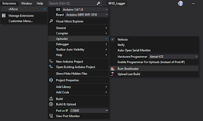

The last time I used my Arduino MKR WIFI 1010 was way back when I wrote a blog about SWD Debugging the Arduino MKR-WiFi-1010 with Atmel ICE. I was at least kind enough to leave myself a note that once the Microchip Atmel Ice
was used, the bootloader would need to be burned again to program the board over the serial port. Unfortunately the link was not very helpful. Perhaps the contents changed. In any case, I was not able to use the Ardunio IDE to burn the bootloader.
Wow, I tried searching the Arduino forums, and some of the folks there are pretty harsh with people asking simple questions. Either the answer to them was "
don't burn the bootloader" or "read the fine manual". I didn't even bother asking. Instead I'm posting this solution, as yes, sometimes you really do need to burn the bootloader, and yes, I did RTFM
(and still didn't find what I was looking for).
My
prior blog includes all the pics on connections and such. The only thing needed is this information on how to burn the bootloader from within Visual Studio using the Visual Micro Arduino Extension
. Once the Atmel ICE is connected, a fresh bootloader is just a couple of clicks away:
|
 |
| Menu selection for burning a fresh bootloader on the Arduino MKR Wi-Fi 1010 Board |
A successful load should have an output like this:
{% include code_header.html %}
Burning a new bootloader
Burning bootloader to board 'Arduino MKR WiFi 1010' using 'Atmel-ICE'
Erase Pattern:
Bootloader Pattern: "{path}/{cmd}" {bootloader.verbose} -s "{path}/share/openocd/scripts/" -f "{runtime.platform.path}/variants/{build.variant}/{build.openocdscript}" -c "telnet_port disabled; init; halt; at91samd bootloader 0; program {{ "{{" }}{runtime.platform.path}/bootloaders/{bootloader.file}}} verify reset; shutdown"
C:\Users\gojimmypi\AppData\Local\arduino15\packages\arduino\tools\openocd\0.9.0-arduino6-static\bin\openocd.exe -d2 -s "C:\Users\gojimmypi\AppData\Local\arduino15\packages\arduino\tools\openocd\0.9.0-arduino6-static/share/openocd/scripts/" -f "C:\Users\gojimmypi\AppData\Local\arduino15\packages\arduino\hardware\samd\1.6.20/variants/mkrwifi1010/openocd_scripts/arduino_zero.cfg" -c "telnet_port disabled; init; halt; at91samd bootloader 0; program {{ "{{" }}C:\Users\gojimmypi\AppData\Local\arduino15\packages\arduino\hardware\samd\1.6.20/bootloaders/mkrwifi1010/samd21_sam_ba_arduino_mkrwifi1010.bin}} verify reset; shutdown"
Open On-Chip Debugger 0.9.0-g932ec70 (2017-02-15-12:34)
Licensed under GNU GPL v2
For bug reports, read
http://openocd.org/doc/doxygen/bugs.html
debug_level: 2
Info : only one transport option; autoselect 'swd'
adapter speed: 500 kHz
adapter_nsrst_delay: 100
cortex_m reset_config sysresetreq
Info : CMSIS-DAP: SWD Supported
Info : CMSIS-DAP: JTAG Supported
Info : CMSIS-DAP: Interface Initialised (SWD)
Info : CMSIS-DAP: FW Version = 01.27.0082
Info : SWCLK/TCK = 1 SWDIO/TMS = 1 TDI = 1 TDO = 1 nTRST = 0 nRESET = 1
Info : CMSIS-DAP: Interface ready
Info : clock speed 500 kHz
Info : SWD IDCODE 0x0bc11477
Info : at91samd21g18.cpu: hardware has 4 breakpoints, 2 watchpoints
target state: halted
target halted due to debug-request, current mode: Thread
xPSR: 0x81000000 pc: 0x00004aac msp: 0x20007fa8
target state: halted
target halted due to debug-request, current mode: Thread
xPSR: 0x81000000 pc: 0x00000b80 msp: 0x20007ffc
** Programming Started **
auto erase enabled
Info : SAMD: partitioning the first flash page into 8 subpages
Info : SAMD MCU: SAMD21G18A (256KB Flash, 32KB RAM)
wrote 8192 bytes from file C:\Users\gojimmypi\AppData\Local\arduino15\packages\arduino\hardware\samd\1.6.20/bootloaders/mkrwifi1010/samd21_sam_ba_arduino_mkrwifi1010.bin in 0.869252s (9.203 KiB/s)
** Programming Finished **
** Verify Started **
verified 7992 bytes in 0.676364s (11.539 KiB/s)
** Verified OK **
** Resetting Target **
Done burning bootloader.
Burn complete
shutdown command invoked
That's it! Once the bootloader has been installed, the MKR WiFI 1010 can once again be programmed over the serial port.
If problems are encountered while programming, try pressing the reset button on the board. Keep in mind that this causes the USB device to go away and come back. So if there's a VM Workstation running, there may be a prompt to connect the "new" device to host or virtual machine. The delay in answering that can also cause programming to fail.
Edit: If any problems are encountered seeing the device as a serial port after developing with the Atmel ICE, try loading up a blank program in release mode with the Atmel Studio and then burning the bootloader fresh:
{% include code_header.html %}
/*Begining of Auto generated code by Atmel studio */
#include <Arduino.h>
/*End of auto generated code by Atmel studio */
//Beginning of Auto generated function prototypes by Atmel Studio
//End of Auto generated function prototypes by Atmel Studio
void setup() {
// put your setup code here, to run once:
}
void loop() {
// put your main code here, to run repeatedly:
delay(1000);
}
Copyright (c) gojimmypi all rights reserved. Blogger Image Move Cleaned: 5/3/2021 1:35:54 PM
{kind=link}